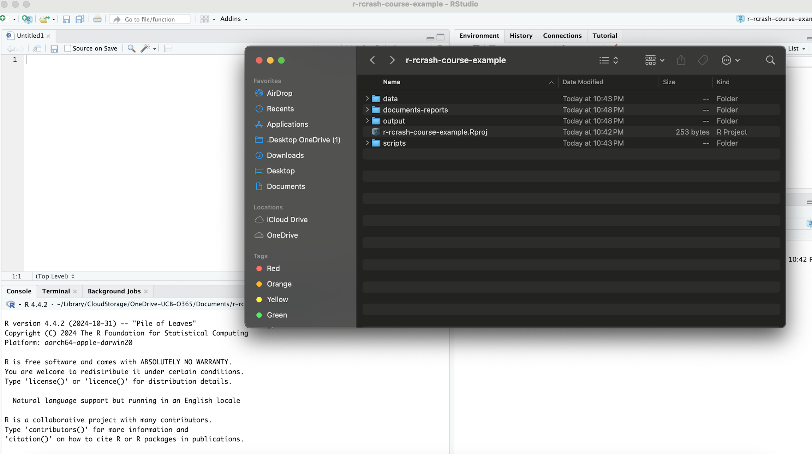

Tools for Reproducibility and Reporting
1 Introduction
2 R Projects
2.1 What is an R Project?
R Studio’s “Project” feature has the potential to make your data management in R easier and more streamlined; it can also, in turn, make your work more reproducible and easier to share with others. An R Studio Project, quite simply, is a folder/directory in which you can store all of the materials associated with an R-based project, such as your raw data, your scripts, outputs (i.e. visualizations, processed data etc.), and reports. Project directories in R Studio come with a .Rproj file that establishes a self-contained workspace for your project. This R Project workspace has several useful features.
2.2 What are the benefits of using R Projects?
First, there is a standardized working directory. When you create an R project, and subsequently work in it, R automatically sets the working directory to the root folder of the project, ensuring that relative paths work consistently and reliably regardless of where in the folder your scripts or files are located. In other words, this feature allows you to not worry about managing file directories; everything in the project file can be referenced in your script with respect to the root folder of the project (i.e. the project’s top-level directory that contains all of the projects, scripts, data, and subdirectories). If you are ever confused about the root folder of the project, it is the one where the .Rproj file is located. Let’s say, for example, that your project directory looks like this:
First, note the .Rproj file within the directory, which indicates that this directory (r-crash-course-example) is the root directory of an R project. Let’s say, for the sake of argument, that you are storing your scripts in the scripts sub-directory, and your raw data in the data sub-directory. Because the working directory is standardized to be the root directory of the project, we can refer to data living in the data folder within a script in the scripts directory using a relative path that originates from the project’s root directory. So, for example, assuming the data folder contains two subdirectories, pt (which contains persson_tabellini_workshop.csv) and wb, we could read in the Persson-Tabellini data with read_csv("data/pt/persson_tabellini_workshop.csv. If this wasn’t an R Project directory, this would not be possible.
The standardization of the working directory makes project management more convenient, and also enables sharing. For example, if you needed to share your work with a collaborator, you could zip up the R project directory and send it to them. When they run your scripts, everything should work as they did on your own computer even though their directory structure is different, since all the file paths are defined in relative terms with respect to the root of the project directory. In addition, GitHub recognizes .RProj files, which allows you to push an R project directory and its components to GitHub. When a collaborator clones the repository to their local machine, they will be able to run your scripts (since it’s set to the project root and all file paths are relative to it), add to your scripts, and push it the changes back up to GitHub. When you update your local repository, everything should continue to work seamlessly.
Second, each R Project is self-contained, which means that variables and objects in one project do not interfere with another. In addition, you can have multiple RStudio windows open for different projects, and they won’t share variables or loaded packages, which is helpful if you’re working on multiple research projects at a time.
Third, each project can have its own set of package versions, which prevents conflicts between projects that require different package versions. More generally, R Projects allow for a lot of customization that defines R’s behavior for that specific project, without generalizing to other projects and R-related files.
Finally, working within a project allows for more effective and organized file management. Instead of dispersing relevant files and directories across your computer, which makes it difficult to keep track of everything, a project allows us to create directories for scripts, data, results, and documents and reports that are centrally located and easy to find.
In short, R Projects offer meaningful benefits in the realm of project and data management, and facilitate sharing, collaboration, and reproducibility.
2.3 How do you initiate an R Project?
To start an R Project, first go to File and click New Project:

Then, select the option to start a project in a brand new working directory:

After that, select the New Project option:

At this point, your project will be created (to confirm this, go to your project directory and confirm the existence of the .RProj file.
In short: project management, reproducibility and sharing